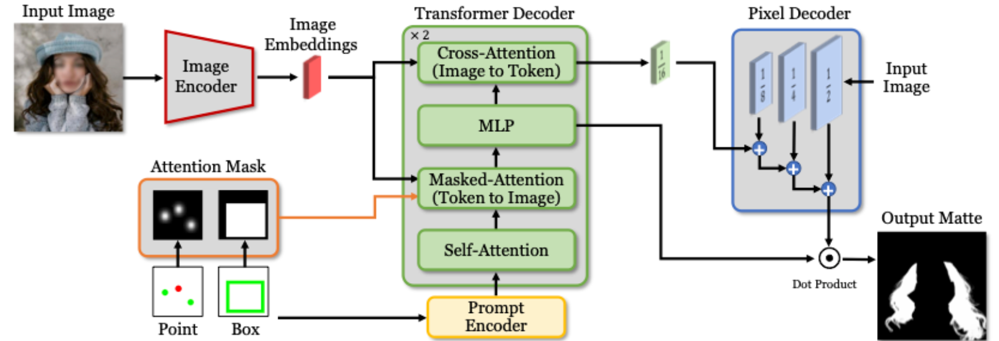
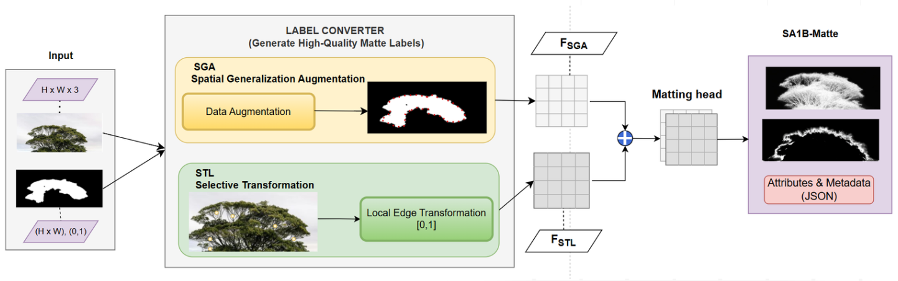
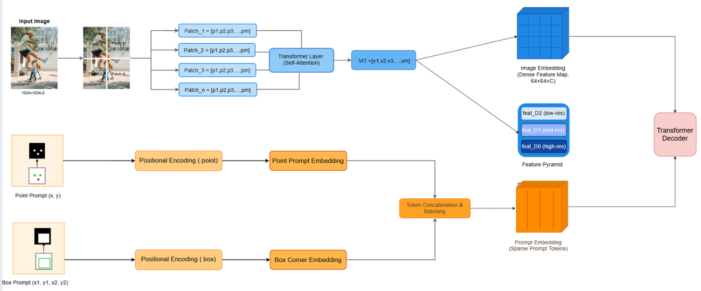
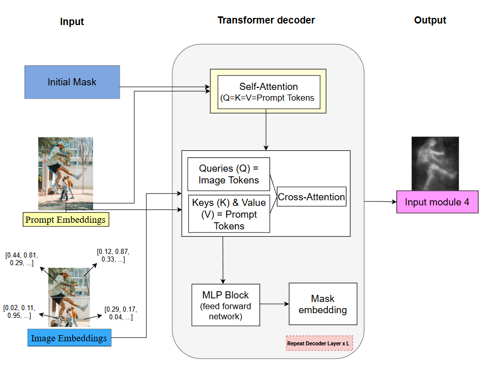
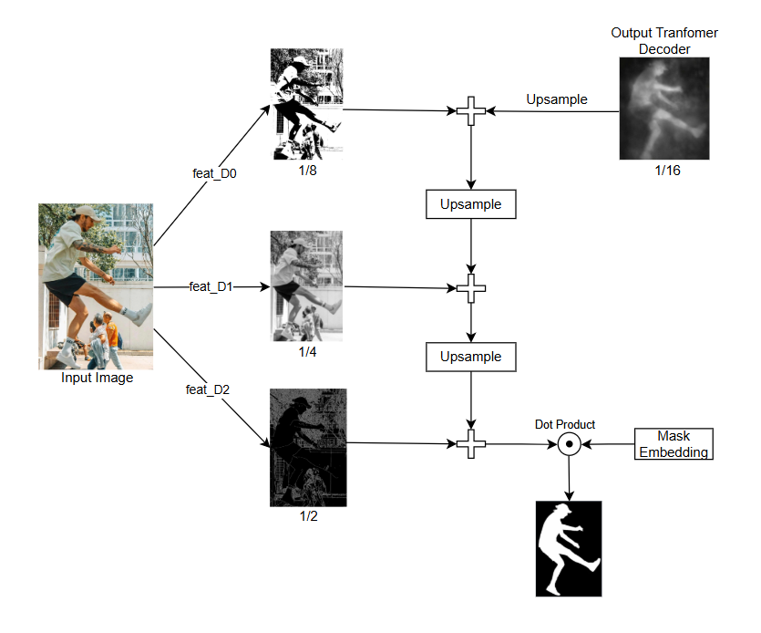
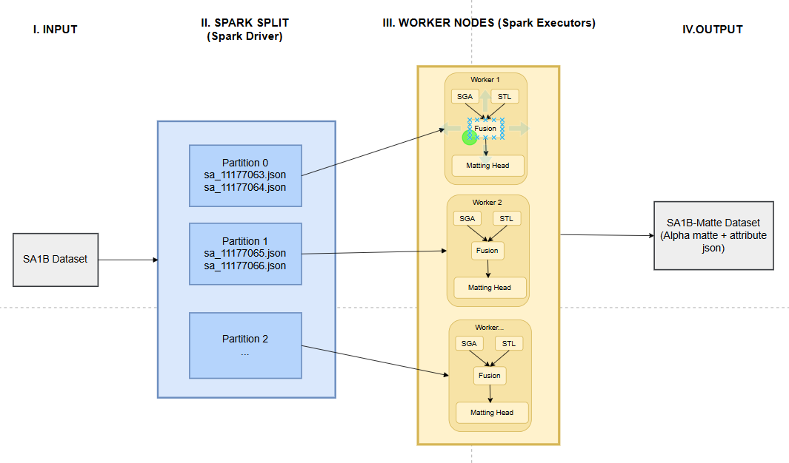
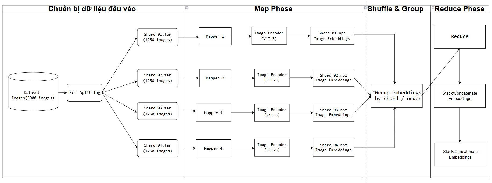
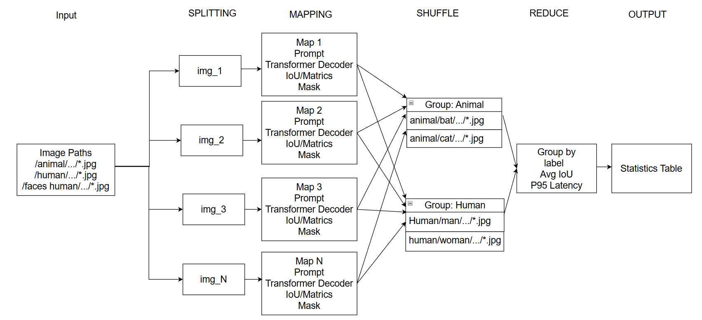
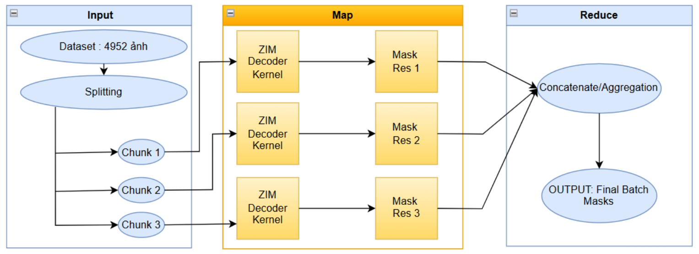

Lý thuyết tổng quát về ZIM
1. Đặt vấn đề:
Những tiến bộ gần đây trong lĩnh vực phân đoạn ảnh,
tiêu biểu là Segment Anything Model (SAM),
đã cho thấy khả năng tổng quát hóa zero-shot vượt trội
trên nhiều loại đối tượng khác nhau. Tuy nhiên, đầu ra của
SAM chỉ là mặt nạ phân đoạn nhị phân, trong đó mỗi điểm ảnh
được gán cứng vào lớp tiền cảnh hoặc hậu cảnh. Cách biểu diễn
này không đủ khả năng mô tả chính xác các vùng biên phức tạp,
đặc biệt là những khu vực chứa các cấu trúc mỏng, trong suốt
hoặc bán trong suốt như tóc, lông thú, kính hay bóng mờ.
2. Giải pháp ZIM:
Để khắc phục hạn chế nêu trên, ZIM đề xuất một hướng tiếp
cận mới bằng cách kết hợp khả năng hiểu ngữ nghĩa của mô
hình phân đoạn zero-shot với bài toán image matting, qua
đó cho phép ước lượng giá trị alpha liên tục cho từng điểm
ảnh. Thay vì chỉ xác định vị trí của đối tượng, ZIM hướng
tới việc mô hình hóa mức độ thuộc về tiền cảnh của mỗi điểm ảnh.
- Label Converter: Một mô-đun sinh dữ liệu mới, có nhiệm vụ chuyển đổi các nhãn phân đoạn thô thành Pseudo Alpha Matte, giúp tạo dữ liệu huấn luyện cho bài toán matting ở quy mô lớn mà không cần gán nhãn thủ công.
- Hierarchical Pixel Decoder: Bộ giải mã phân cấp được thiết kế để khai thác thông tin đa tỉ lệ, nhằm khôi phục các chi tiết tần số cao và tái tạo chính xác các vùng biên mỏng mà các kiến trúc decoder truyền thống thường làm mất.
- Prompt-Aware Attention: Cơ chế chú ý có điều kiện theo prompt đầu vào (ví dụ: điểm hoặc hộp giới hạn), cho phép mô hình tập trung chính xác vào đối tượng mục tiêu và giảm thiểu ảnh hưởng của các vùng không liên quan trong ảnh.
3. Kết luận: ZIM giải quyết bài toán "Độ trong suốt của từng điểm ảnh".
SAM (Segment Anything)
Mục tiêu chínhSegmentation.
Kết quả đầu raBinary Mask (0 hoặc 1).
Chi tiết mỏngKém.
ZIM (Zero-shot Matting)
Mục tiêu chínhMatting.
Kết quả đầu raAlpha Matte (0-1).
Chi tiết mỏngRất tốt.

Hình 1: Sơ đồ tổng quát ZIM

Hình 2: Label Converter

Hình 3: Encoder, Prompt

Hình 4: Transformer Decoder

Hình 5: Hierarchical Pixel Decoder

Hình 6: Kiến trúc Spark Label Converter

Hình 7: MapReduce Encoder & Prompt

Hình 8: MapReduce Transformer Decoder

Hình 9: MapReduce Hierarchical Pixel
[1] A. Levin, D. Lischinski, and Y. Weiss, “A Closed-Form Solution to Natural Image Matting,”
IEEE Transactions on Pattern Analysis and Machine Intelligence, 2008.
[2] Y.-Y. Chuang et al., “A Bayesian Approach to Digital Matting,” CVPR, 2001.
[3] N. Xu et al., “Deep Image Matting,” CVPR, 2017.
[4] Y. Li et al., “Natural Image Matting via Guided Contextual Attention,” AAAI, 2020.
[5] H. Lu et al., “Indices Matter: Learning to Index for Deep Image Matting,” ICCV, 2019.
[6] A. Radford et al., “Learning Transferable Visual Models From Natural Language Supervision,” ICML, 2021.
[7] A. Kirillov et al., “Segment Anything,” ICCV, 2023.
[8] J. Kim et al., “ZIM: Zero-Shot Image Matting for Anything,” ICCV, 2025.
[9] J. Dean and S. Ghemawat, “MapReduce: Simplified Data Processing on Large Clusters,” OSDI, 2004.
Đề tài báo cáo: Xử lý ảnh ZIM - Zero-Shot Image Matting for Anything
Thực hiện bởi các thành viên:
- 1. Hoàng Thanh Trang
- 2. Nguyễn Thị Thanh Thùy
- 3. Hà Quang Dương
- 4. Trần Hoàng Nhất